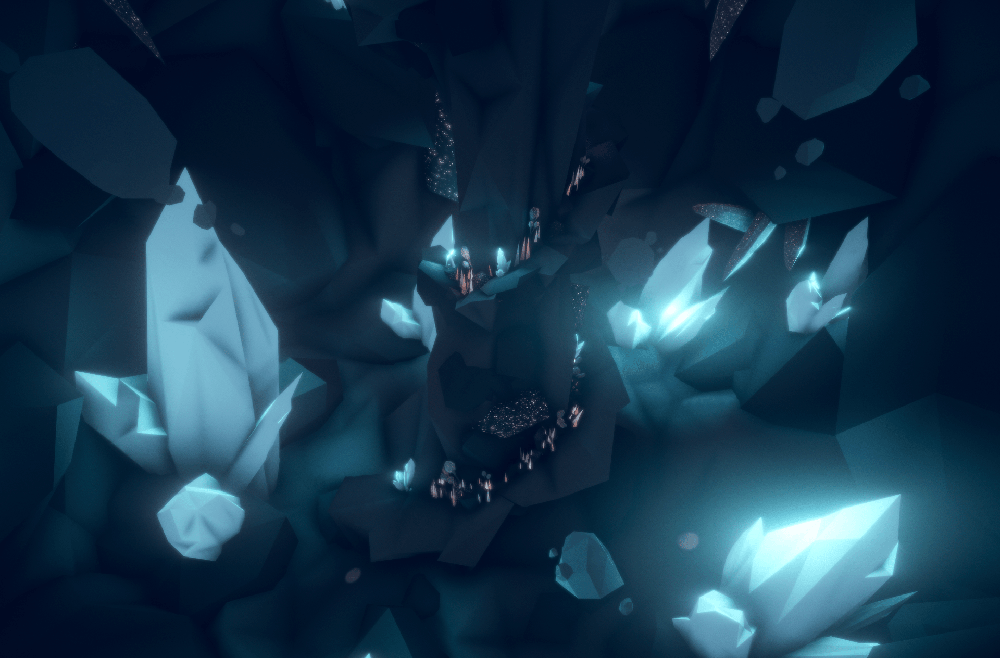
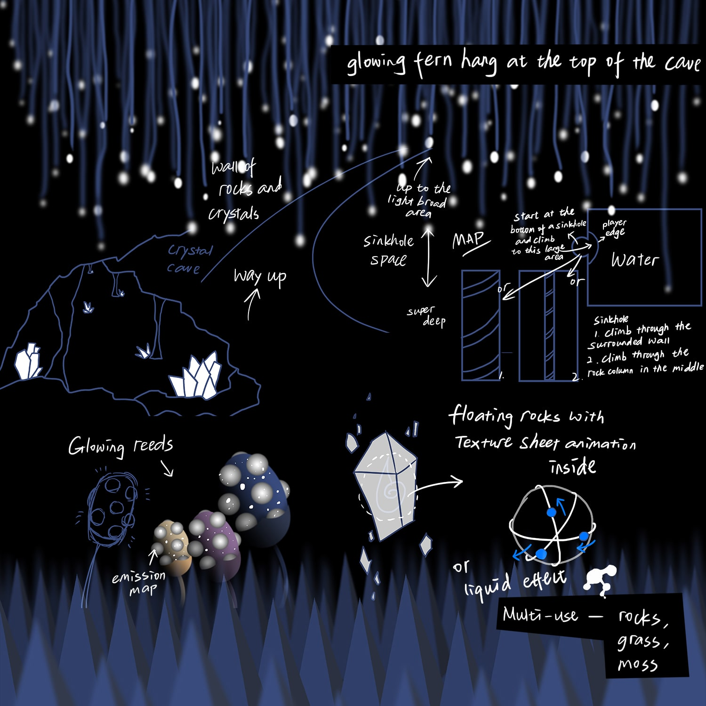
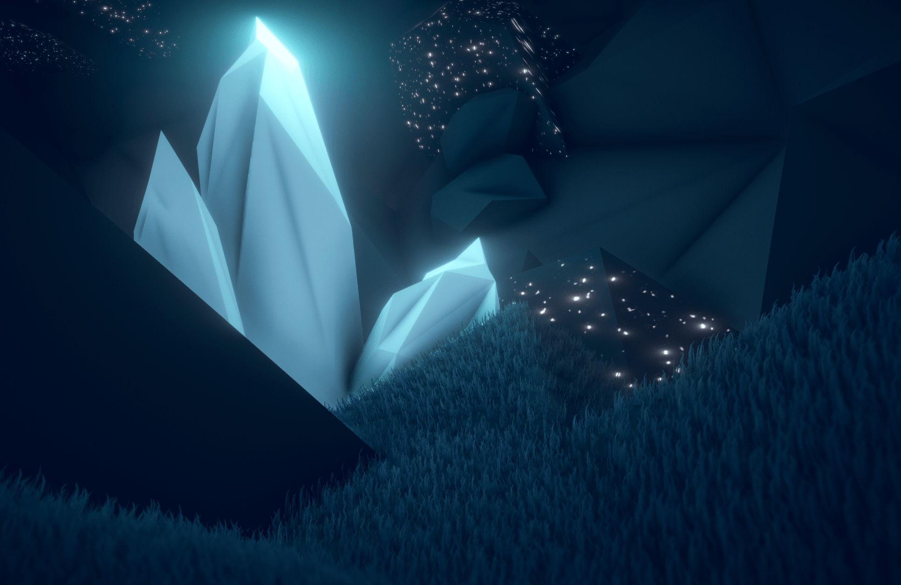

Crystal Cave
Interactive nature environment design
2019

About
Crystal Cave is a 3D environment design of a fantasy-looking dark cave with glowing plants.
This is an individual project showcasing my technical ability in the production processes of interactive 3D scene creation, from researching a concept and drafting it as a set of textured models in Maya, then assembling and lighting the scene in Unity and finally exporting it as an interactive application.
Development
Tools
3D scene development – Unity 3D
3D modelling - Autodesk Maya
Texture design - Adobe Photoshop
Music and sound editing - Logic Pro X
Crystal Cave Crystal Cave Crystal Cave Crystal Cave Crystal Cave Crystal Cave Crystal Cave Crystal Cave Crystal Cave Crystal Cave Crystal Cave

